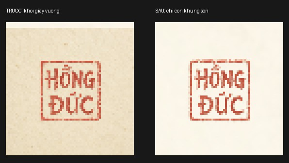

Đã sửa ấn son
Bản chạy thật trên GitHub Pages · đo bằng Safari (WebKit) ở khổ iPhone 13
Ấn son trong thẻ nhân vật bị cùng một lỗi với vòng ảnh đại diện hôm trước.
Anh bảo sửa luôn, tôi sửa rồi.
Lỗi là gì
File seal.png đúng là PNG có kênh trong suốt, nhưng không có một
điểm nào trong suốt cả — cả tấm ảnh là một khối giấy kem đặc. Nên khi đặt vào
game, nó hiện thành ô vuông kem 22×22 đè lên thẻ nhân vật, thay vì chỉ
hiện nét con dấu đỏ.
Đo được: bản cũ 0% trong suốt trên 300×300 —
bốn góc đều là màu giấy. Bản mới: 86,5% trong suốt,
bốn góc trong suốt hoàn toàn.
Trước và sau, trong game thật

Trái: ô vuông giấy đặc. Phải: chỉ còn nét con dấu, thấy được nền thẻ phía sau.
So hai ảnh chụp: 91,9% điểm ảnh đổi — tức là thay đổi
thật và thấy rõ, không phải sửa cho có.
Cách sửa, và cách biết không làm hỏng hình
Ấn son là mực đỏ trên giấy kem. Nên tôi tách nền theo độ đỏ của
từng điểm ảnh, chứ không theo độ sáng — vân giấy có chỗ tối ngang mực nhạt,
tách theo độ sáng sẽ còn sót lại nền.
Đo độ đỏ: giấy 14–18, mực son 65–149.
Hai nhóm tách rời hẳn nên tách rất sạch.
Kiểm tra không ăn mất nét vẽ: đặt bản đã tách lên đúng màu giấy rồi so với
ảnh gốc — lệch trung bình 13,6/255 mỗi kênh, chỉ
0,04% điểm ảnh lệch nhiều. Nghĩa là hình con dấu
giữ nguyên, chỉ bỏ nền đi.
Đã kiểm những gì
- Chạy trên Safari thật (WebKit), giả lập iPhone 13, cảm ứng thật.
- Ấn son hiện đúng 22×22, ảnh tải được, không lỗi JS.
- Chụp riêng phần tử ấn son để so trước/sau, không chỉ nhìn cả trang.
- Bộ kiểm thử của game: 124 đạt và
161 đạt, 0 hỏng — không làm vỡ chỗ khác.
- Sửa cả hai bản ảnh:
assets/ui/ và docs/assets/ui/.
Vào game xem
Ấn son nằm ở góc dưới bên phải thẻ nhân vật trong tab Nhân vật.
Trước đây nó là ô vuông kem, giờ chỉ còn nét đỏ.